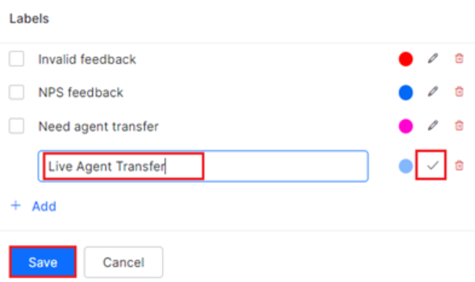

Conversations History¶
The Conversation History dashboard allows you to review the transcripts of past conversations and label certain conversations for follow-up or further action.
The Advanced Conversation Analytics feature provides a more detailed view of the conversation, including events and custom tags, which can help you better understand the interaction between the customer and the virtual assistant. Custom Tags can be reused across conversations for training purposes and for identifying areas where the virtual assistant could improve.
Note
The Conversations History Dashboard is available only post the 9.3 release, i.e. post-July 24, 2022.
To view the Conversations History dashboard, follow the steps:
-
Click the three dots on the left navigation pane and then click Analytics.The Analytics panel is displayed with the list of reports.

-
Click the Conversations History dashboard under the Automation section of the Analytics panel. The Conversations History dashboard is displayed on the right side of the page.
- Select appropriate filters on the dashboard and click Apply.
Filter Views Page¶
The Filter Views page is the preface or landing page displayed when you click the Conversations History left menu item. You can create and view prebuilt and custom filters, filter configurations, and descriptions on this page in addition to the following:
- View the available conversation filters and their configurations.
- Create a custom filter to view only the required data.
- Access the Conversations History Dashboard for the selected preset.

Prebuilt Filters for Conversations History¶
As an analyst, you may need a customized view of the conversation’s history data based on specific conditional filters. This helps analyze conversations based on priority/criticality.
The Platform now supports Prebuilt Filters or Presets for the most common use-case scenarios. Presets reduce the developer’s efforts in skimming through each conversation to understand and tag them for a specific use case.
How it works
- The system checks the configuration parameters and the filter conditions for a conversation session.
- The conversation session is mapped to the respective filter automatically.
- Based on the date range selected on the Conversations History Dashboard, the system fetches and displays the conversations that meet the Prebuilt Filters’ criteria.
Types of Prebuilt Filters¶
The following table displays each preset’s filter name, predefined configuration parameters, and description. For more information on the configuration parameters, please click here.
| Filter Name | Configuration | Description |
| All Conversations (default) |
|
Shows all the conversations made during the specified dates irrespective of the filter criteria selected on the dashboard.
Note: The user cannot edit the “All Conversations” view. |
| Conversations with Multiple Intent Identification Failures |
|
Shows all the conversations with intents unidentified in a given date range. |
| Conversations with Multiple Entity Retries |
|
Shows all the conversations with entity retries in a given date range. |
| Conversations with Multiple Confirmation Retries |
|
Shows all the conversations with confirmation retries in a given date range. |
| Short Conversations resulting in User-Drop off |
|
Shows all the conversations where users got dropped off and conversations that are less than 30 seconds. |
Feedback Prebuilt Filter¶
The Platform supports the Feedback filter on the Filter Views panel to create custom feedback filters. Based on the filter criteria, the system groups and displays the conversations for the following parameters:
- Feedback Survey Template Type: Indicates if the selected type is NPS, CSAT, or Thumbs-up / Thumbs-down. Learn more.
- Operator: The conditional/logical operator that applies to the Feedback filter evaluation which includes one of the following:
- Equals to
- Less than or equals to
- Greater than equals to
- Greater than
- Less than
- Value: The feedback survey score used for the conditional logic evaluation.
Note
The conversations with different survey types can be grouped using the OR operator to satisfy multiple conditions.
View Prebuilt Filters¶
To view the prebuilt filters, follow the steps:
-
On the Conversations History dashboard page, the prebuilt filters are categorized and listed under the Filter Views section.

-
Click the Read More link corresponding to the name of the filter type to see the configuration details of each conversation filter type.

-
Click any prebuilt filter name to access the Conversations History panel where relevant data is displayed.

Create a Custom Conversation Filter¶
A Conversation Filter helps group and display selective conversation history data based on a specific criterion on the dashboard.
To add a custom filter, follow these steps:
-
On the Conversations History page, click + Create Filter.
-
On the Create Conversation Filter panel, provide inputs for the following fields:
3. Click Save.
ld Configuration Description View Name N/A Enter the name of the filter that will be displayed on the dashboard. Description N/A Enter the description for the filter that will be displayed on the dashboard. Conversation Status The available options include: - All
- Active
- Closed
Select All to view all conversations, Active to view ongoing conversations, and Closed to view conversations that have ended. Containment Type The available options include: - Self-service
- User Drop-off
- Agent Transfer
Select one of the following: - Self-service to view only customer self-service conversations
- User Drop-off to view only conversations where the user dropped off.
- Agent Transfer to filter conversations with the agent transfer flow.
Channels The available selection options include: - All Channels
- Web/Mobile Client
- Webhook
- Other configured channels.
Filters conversations using the enabled channels. Languages The available selection options include: - All Languages
- English (default)
- Other configured languages
Filters conversations using the enabled languages. Session Type The available selection options include: - All
- Interactive
- Non-interactive
Filters conversations for conversations across all channels, only interactive channels, or only non-interactive channels based on the selected option. User ID The available selection options include: - Include
- Exclude
Filters conversations using the Platform user identities based on the inclusion or exclusion list. Channel ID / Kore ID selection Toggle between the options. Filters conversations using either the Channel ID or Kore ID. Task / Intent Select either all intents or specific configured intents. Filters conversations using all intents/tasks or specific tasks/intents identified during the conversation sessions. Developer Interactions (IsDeveloper) The available selection options include: - Include
- Exclude
Filters conversations by including or excluding developer interactions based on the selected condition. Time Zone Select from different global time zones. Filters conversations based on the time zone of the conversation session. Conversation Duration The Conditional Filter options include: - Less than
- Less than Equals to
- Greater than
- Greater than equals to
- Equals to
The Time units options include:
- Seconds
- Minutes
Filters conversations based on the conditional filters set for the conversation session duration in seconds/minutes. Events The Conditional Filter options include: - Less than
- Less than Equals to
- Greater than
- Greater than equals to
- Equals to
The Event Name options include:
- Intent Identified
- Intent not Identified
- Success Task
- Fail Task
- Sentiment Event
- User Sentiment Type
- Entity Retry
- Confirmation Retry
- On Connect
- End of Conversation
- Debug Log
- Welcome
- Welcome Telegram
- Welcome Facebook
- Welcome Telephone
- Standard Response Interruption
- Message Node Interruption
- Optional Entity
- Script Node Failure
- Service Node Failure
- Agent Transfer
Filters conversations based on the conditional filters set for the conversation session duration and the selected event. Feedback The Feedback Type options include: - NPS
- CSAT
- Thumbs-up/Down
The Conditional Filter options include
- Less than
- Less than Equals to
- Greater than
- Greater than equals to
- Equals to
The options for Score include:
- NPS: Select a value between 0 and 10.
- CSAT: Select a value between 0 and 5.
- Thumbs-up/Down: Select either 0 or 1.
Filters conversations based on the feedback type, conditional filter, and feedback score selection. Labels Select either all conversation labels or a specific configured label. Filters conversations based on the selected label(s). Custom Tags Select the key and type the value for the key to define the custom tag selection. You can combine multiple key-value pairs to define the custom tag selection. Filters conversations using custom tags added to the conversation for a key-value pair and the AND logical operator. The new custom filter is listed on the Filter Views page. The conversations are grouped and displayed Conversations History Dashboard based on the inputs provided on the Filter Views page.
Edit a Conversation Filter
You can edit one or more fields for an existing conversation filter.
To edit a conversation filter, follow the steps:
- Click the custom filter on the Filter Views page.
-
Click the More Filters dropdown list on the Conversations History panel.

-
Modify the required fields on the Edit Conversation Filter window.
-
Click Apply.

Filter Criteria¶
You can customize the Conversations History data view by selecting the Filter Criteria on the dashboard. Please click to view the available filters.
Conversations History Dashboard¶
The Conversations History Dashboard displays the following information for each conversation session that meets the defined filter condition(s) for the selected date range.
Containment Type
The following containment types affect the conversation flow and are displayed on top of the individual Conversations History details panel:
- Self-service: Indicates that the conversation (initiated by the user) with a VA was successfully completed.
- Agent Transfer: Indicates that the conversation was transferred to a live agent using the Agent Transfer node in the Dialog Flow.
-
User Drop-off: Indicates that the user stopped participating in the conversation before it was completed, either due to an error in the flow or some other reason.

Label
A custom label helps identify conversations that require follow-up or indicate an action item for an analyst during the review.

Add a Custom Label
To add a custom label in addition to the default label for a conversation, follow the steps below:
-
Click the + Label button on the Conversations History panel for the required conversation session.

-
In the Labels window, scroll down and click + Add.
-
Enter the label name, and click the confirm icon.
Note
You can select a different label color by clicking the color icon and using the color palette.
 4. Click Save.
Manage a Custom Label
Edit
You can edit or delete an existing custom label while adding a new label.
To edit a label, follow the steps:
- Click the + Label button on the Conversations History panel for the required conversation session.
- In the Labels window, click the edit icon for the label you want to modify.
- Make the changes and click the confirm icon.
- Click Save.
Delete
To delete a label, follow the steps:
- Click the + Label button on the Conversations History panel for the required conversation session.
- In the Labels window, click the delete icon for the label you want to remove.
- Click Save.
Other Conversation Parameters
The Channel, Language, Date, and conversation duration are displayed at the top of the Conversation History analytics panel.

Conversation Summary¶
- User Messages: The number of messages sent by the user to the virtual assistant.
- Bot Messages: The number of messages sent by the bot/virtual assistant to the user.
- Intents Identified: The number of user intents identified by the virtual assistant during the conversation.
- Intent Unidentified: The number of utterances that did not result in any intent identification during the conversation.
- Tasks Completed: The number of tasks successfully completed by the virtual assistant.
- Failed Tasks: The number of tasks that failed during the conversation.

Conversation Events¶
Conversation Events indicate the sequence of occurrences during a conversation triggered by customer inputs and responses while interacting with a bot. Each event can be categorized into regular and error-based occurrences. When analyzing a conversation flow, the user can identify the event type based on the following icons that are displayed for the relevant event.
The list of events triggered during a conversation is displayed below.
Intent Found: Triggered when the virtual assistant understands the user’s intent. The intent name identified is displayed.
EVENT DESCRIPTION Intent Not Found Triggered when the virtual assistant is unable to understand the user’s intent. Agent Transfer Triggered when a live agent transfer is initiated during the conversation. Entity Retry Triggered when the input provided by the user is not identified by the virtual assistant and an input retry request to the customer. Confirmation Retry Triggered when a confirmation request for a query or selection is generated from the virtual assistant to the customer. On Connect Triggered every time a customer invokes Web/Mobile SDK (a conversation is initiated on the channel). Sentiment Event Triggered when a customer’s sentiment is identified during the conversation. The user sentiment type identified is displayed. Welcome Triggered on receiving a message from the user when channel specific event is not configured. Welcome Event Telegram Triggered on receiving a welcome event from Telegram. Welcome Event Facebook Triggered on receiving a welcome event from Facebook Messenger. Welcome Event Telephone Triggered on receiving a Telephone Call from any voice channel. End Triggered on the closing of a conversation. Debug Log Triggered when a debug log script runs for a script failure or service failure event. Script Failure Triggered when a Script node failure occurs. Service Failure Triggered when a service node failure occurs. RCS Opt In Triggered on receiving Opt-In from the user for Rich Communication Services. RCS Opt Out Triggered on receiving Opt-out from the user for Rich Communication Services. User Message Triggered when a customer sends a message to the virtual assistant on the channel. Enriched Chat Transcript¶
The Enriched Chat Transcript feature provides a more detailed view of the conversation, with all the events associated with each message displayed in the chat transcript slider. This can be useful for understanding the conversation at a granular level and identifying any issues that may have arisen. It can also help train the virtual assistant and improve its performance.
To view the Enriched Chat Transcript, enable the Show Events option (default setting) in the Chat History panel.
Note
Disabling the Show Events option will display only the chat transcript without the events.
The Event labels that appear under Conversation Events are displayed against each chat text in the chat transcript slider. Click here to learn more about Conversational Events.


Feedback User Type Label
For conversations with the customer response to a feedback survey, the feedback user type label is added automatically based on the analytics data. This label indicates if a customer is a promote or a detractor.
Hovering the mouse on the label displays the following data:
- Number of feedback responses collected.
- Type of feedback survey.
- Customer type (result generated internally after the feedback is submitted).
- Feedback score.

User Details¶
To view the details of the agent that handled a conversation session, follow the steps below:
- Click either Conversation Summary or Conversation Event on the dashboard.
-
On the landing page, click the User Details tab to view the following information:
- User ID: The unique ID assigned to the agent.
- Channel Data: The conversational channel where the interaction occurred.
- Total Conversation Sessions: The total number of conversations the agent has handled for the selected period.
- Sessions in the Last 30 Days: The number of conversations the agent handled in the date period that the used has selected within the last 30 days.
- Last Interaction Date: The date of the agent’s most recent customer interaction.
- User Meta tags: Used to identify important keywords in the conversation.
Chat History¶
The chat conversation flow between the virtual assistant and the customer is displayed in the Chat History panel, including events, actions, input requests, queries, and intent-based responses. Any failed tasks or exceptions that occurred during the conversation will also be displayed here.
The Enriched Chat Transcript is visible on the Chat History panel.
To view Chat History, follow these steps:
- Click an entry under Conversation Summary or an event under Conversation Events on the Conversation History dashboard.
-
The Chat History window displays the conversation flow. In addition, the following information is displayed on the side pane:
-
Date Filter dropdown to select the period of Chat History.

-
The date-wise information summary on the following:
- Conversation channel.
- Chat initiation event.
- Chat Duration
- Chat Start time and End time.
- Conversation summary of the following metrics:
- User messages
- Bot messages
- Intents identified
- Intents Unidentified
- Tasks completed
- Failed Tasks
- Language (of interaction)
- Event labels tagged to the conversation history.

- Trace ID – A unique ID assigned to each incoming message. The ID is also included in all the logs maintained by the Platform. When you hover over the message, the info icon appears. Click the Info icon to view the Message ID associated with the message.
- Click the Message Id to view the Trace ID associated with a message in the Chat History.

-
Note
The Trace ID is retained in the logs for 30 days. Once the Trace ID is expired, you see a tooltip message as ‘
Trace Id: Trace records for this message are not available‘.Message Tags¶
Message Tags help identify and categorize messages in the chat transcript. They add clarity and context to the conversation and can be reused across related conversations. System-defined message tags are provided by default, but users can create custom tags by defining a key-value pair. The key is used as an identifier for the specific message, and the value is the expected customer response to that message.
Important
- You cannot add the same key to a message again.
- A custom message tag can only be added and detached from a message and not edited.
To add a custom message tag, follow the steps:
- Hover over the message transcript in the conversation where you wish to add the message tag.
-
Click +Message Tag.

-
In the Add Message Tag window, enter the Key and Value in their respective text fields.
-
Click Save. The new message tag is displayed below the message in the transcript slider.
Note
The custom message tag you create is available in the Custom Tags Filters section as one of the filtering criteria.
The Feedback Survey feature allows customers to provide feedback on their conversations with the virtual assistant.
If enabled, the customer’s response to the survey will be displayed in the chat transcript under Chat History.
The system captures and displays a feedback event label
"End of Conversation: Survey Type"on the chat transcript, indicating the end of the conversation and the survey type.The response will be mapped to a key-value pair for the conversation timeline, which can be useful for analyzing the conversation and customer experience at a granular level. This information is useful to improve the virtual assistant’s performance and enhance the customer experience.

The Conversation Summary displays the following information on the Feedback event:
-
The Start Time and End Time, along with the real-time counts for the following:
- User Messages
- Bot Messages
- Intents Identified
- Intents Unidentified
- Tasks Completed
- Failed Tasks

-
The Feedback Event is based on the event timeline with Key and Value.
- The total number of feedback responses collected for the session and the following:
- Type of Feedback
- Feedback response
- Score
{kind=link}
{kind=link}
{kind=link}
{kind=link}
{kind=link}
{kind=link}
{kind=link}
{kind=link}
{kind=link}